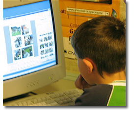
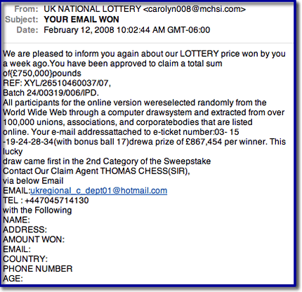

Using Information

At this stage of the research process students are critically and analytically working with the information they have found. This stage requires a great deal of teacher support, modeling and scaffolding, as this is a very frustrating stage for students. Without critical supports for students at this stage they will resort to copying and pasting especially when they encounter information that is beyond their reading comprehension level.
During this phase of the information problem-solving process students need the skills to:
- Evaluate Information
- Analyze and synthesize information
- Organize information
- Use information ethically and safely
At this stage of the research process students have progressed to working with the information found within the resources they located in the previous stage but they still continue to use many of the tools and skills used at previous stages of the process such as, graphic organizers , social bookmarking and research planners .
Evaluating Information
...the presence of inaccurate and biased information on the Internet is not our primary problem.
The information and points of view have not really changed, it is the tools that have changed.
David Warlick in Evaluating Internet-Based Information: A Goals-Based Approach

Evaluating Information
- Use specific criteria to determine the legitimacy of sources
- Evaluate resources based on relevance and reading level
- Determine different points of view presented in two pieces of information on the same topic
- Distinguish between bias, opinion and fact
In the article Critical Evaluation in the Collaborative Era, Kathy Schrock asks How do we teach critical evaluation of information when we have no way to determine authority? The focus in this article is on the issues and difficulties that arise in determining the 'research worthiness' of information in a wiki world.
Articles and Checklists
Better Read That Again: Web Hoaxes and Misinformation
This article differentiates and discusses differenent kinds of misinformation: counterfeit sites, parodies and spoofs, ficticious, questionable, malicious, product sites and subject specific misinformation sites. It also offers a number of sites that track internet misinformation including Snopes.
BBC interview with Tara Brabazon - "Google is white bread for the mind" - article in Times Online. - both of these may be time sensitive and therefore at some point the links may be broken.
Google is “white bread for the mind”, and the internet is producing a generation of students who survive on a diet of unreliable information
Teacher Helpers: Critical Evaluation Information - a collection of articles and evaluation checklists available from Kathy Schrock
Popular MicroModules on Evaluation from the 21st Century Information Fluency Project:
|
Hints About Print
This is an interactive tool that takes students (grade 3 - 5) through a processing of determining if a non-fction book is the best resource for their research. Once students have viewed the online demo they can print-out a fillable PDF and evaluate their own non-fiction book.
Quality Information Checklist - uses imaginary examples, quizzes and puzzles to allow young people (grades 3 - 7) explore for themselves the concepts around information quality. Many of the examples are health related, but the concepts can be used with any subjects that require information skills.
Fact or Folly: Evaluating Online Information - from Media Awareness Network
Evaluating Web Pages: Techniques to Apply & Questions to Ask - uses critical thinking skills, a series of specific questions, and techniques to provide a strategy for determining if a website can be trusted.
Online Evaluation Tools
Digital Index Card - a web-based tool for collecting and evaluating Net information. It consists of six forms that ask questions of the researcher, all designed to collect content and to help the researcher make decisions about the appropriateness of the information. As student input pertinent information about the source they asked questions which relate back to their research goal e.g. What aspect(s) of the author's or publishing organization's background helps you accomplish your goal?
Evaluation Wizard from 21 Century Information Fluencey - as students enter their evaluation notes for author, publisher, objectivity, date, accurancy and evidence they are provided with prompts about what to look for within the web site they are evaluating.
A WebQuest about Evaluating Web Sites : from Joyce Valenza for grade 9 - 12 students (Note - last updated in 2001 - links may have to be updated)
Applying Reading Comprehension Strategies to the Evaluation Process
 Critical Evaluation: Scary Research Findings Prompt New Internet Reading Strategies
Critical Evaluation: Scary Research Findings Prompt New Internet Reading Strategies
Julie Coiro presents five activities associated with the online reading tasks that research suggests are particularly challenging for students who read to learn on the Internet. Each activity is accompanied with pertinent questions and relevant web sites.
- evaluating relevancy - reading search results
- evaluating reliability- investigating the author
- evaluating reliability - investigating the validity of the web site
- detecting bias - separating fact from opinion
- detecting bias - developing a healthy skeptism
A Think Aloud to Model Online Reading demonstrates how to use reading comprehension strategies to read, question and ultimately evaluate the relevance and validity of a web page. From: 21 Century Literacies
Researching a Web Page - using Treaty 6 students respond to a number of questions which focus their reading on each part of the Web page. (From - Elgin Wyatt, NBCHS)
From Alan November
Our students must understand the architecture of the internet to be able to effectively evaluate the information they find.
How to Read a Web Address - The first step in learning the grammar of the Internet is to read URLs closely.
WayBack Machine - Want to see the history of web site? Take a trip through time with the Wayback Machine.
How to Find the Publisher of a Website using EasyWhoIs
Beyond the Checklist - using contextual analysis to evaluate web pages
 Student Web Page Evaluation - a blog post that describes a successful lesson in which the teacher asks the students to use the comparison method. This requires requires the researcher to compare different sources and different types of sources in order to select the most useful.
Student Web Page Evaluation - a blog post that describes a successful lesson in which the teacher asks the students to use the comparison method. This requires requires the researcher to compare different sources and different types of sources in order to select the most useful.
Diagram from U Arizona Information Literacy: Evaluating Web Resources
Evaluating Blogs and Wikis
 |
 |
21 Century Information Fluency presents a number of resources that can be used to understand how to evaluate web 2.0 resources especially blogs.
A podcast (10:36 minutes) with Joyce Valenza points to key tips and ideas about what to look for when using blogs for research.
In Joyce Valenza on Evaluating Blogs Joyce says,
Blogs are essentially primary sources and can provide lively insights and perspectives not documented by traditional sources. They compare in some ways to a traditional interview, with the speaker controlling the questions. Ripe for essays and debate, blogs present not only the traditional two sides of an issue, but the potentially thousands of takes. And those takes take less time to appear than documents forced through the traditional publishing or peer review process. Blogs allow scholars and experts written opportunities to loosen their ties and engage in lively conversation.
This article from the 21Century Fluency Project provides an overview of the key things to look for in a blog as well as a well designed rubric for evaluating the legitimacy and usefulness of a blog.
It is essential to consider who is creating all this information and whether there is any real substance to back up the ideas and opinions that anyone can easily publish on the Internet.
Evaluating Wikis from: Information Fluency Meets Web 2.0 PowerPoint by Joyce Valenza
- What is the purpose of the collaborative project and who began it?
- How many people appear to be involved in editing the wiki? Does it seem that the information collected is improved by having a variety of participants? How heavily edited were the pages you plan to use?
- How rich is the wiki? How many pages does it contain?
- Does the project appear to be alive? Are folks continuing to edit it?
- Does the information appear accurate? Can I validate it in other sources?
Evaluating email

How to recognize an email hoax
The following five scenarios describe most email hoaxes:
- A warning of a new virus that you should send on to everyone you know.
- A warning of a scam that you should send on to everyone you know.
- A petition to help the needy or some cause that wants you to foward it on to those who might be interested.
- A get-rich-quick scheme that claims if you forward on the message you'll receive money for each time it's forwarded.
- A claim that for each email sent someone in need will be helped by another organization.
Good email practices include:
- don't open files from strangers or files that you aren't
- expecting, don't give out your email or IM address or personal
- information, don't reply to spam,
- delete junk e-mails messages without opening them,
- don't forward chain e-mail messages,
- don't buy things advertised through email.
Tips for dealing with email hoaxes and to avoid viruses.
Snopes the best source for factual information about rumors
Truth or Fiction.com - your email reality check
Hoax-Slayer is dedicated to debunking email hoaxes, thwarting Internet scammers, combating spam, and educating web users about email and Internet security issues.
Lesson Plan: Don't be fooled by a photograph from National Geographic
In this lesson, students will study images that we altered digitally, to create a desired effect. Students will discuss how a photograph conveys information, and how changing that photograph can change its message. This lesson plan is based on the National Geographic News story, "Shark 'Photo of the Year' Is E-Mail Hoax," which covers an urban legend based on a doctored photograph.
Organizing Information

Organizing information
- Utilize a variety of visual organizers
- Take notes using point form and paraphrasing
- Create an outline
- Tag and describe bookmarks using a social bookmarking tool
Taking Notes
Note Cards - examples
Taking Notes - using the notecard method
The following two links are from Debbie Abilock's NoodleTools - many ideas and links for teaching students to paraphrase, quote and summarize.

Research Building Blocks: Notes, Quotes, and Fact Fragments (Grade 3 - 5)
The students learn the importance of finding the words in sentences and paragraphs that contain the facts they need for compiling their research. The students then move to putting those notes into their own words, avoiding plagiarism. Embedded in this lesson is an online activity where students can participate in the fact finding process.
Online Note-taking tools
ReadWriteThink Notetaker (Grade 3 - 5)
This hierarchical outlining tool allows students to organize up to five levels of information for reading and writing activities. During or after reading, the Notetaker can be used to compile and organize reading notes, research, and related ideas. During the writing process, students can use the tool to organize their information and plan texts in the prewriting stage and to review and structure their ideas during writing and revision.
Ubernotes - This web-based application focuses on just one thing; helping you write and then find your notes. A review of this application can be found at School Library Journal.
Best4C - online diagram tool that allows you to create, edit and share charts
Google Notebook
Clip and collect information as you browse the web:
- Clip useful information.
You can add clippings of text, images and links from web pages to your Google Notebook without ever leaving your browser window. - Organize your notes.
You can create multiple notebooks, divide them into sections, and drag-and-drop your notes to stay organized. - Get access from anywhere.
You can access your Google Notebooks from any computer by using your Google Accounts login. - Publish your notebook.
You can share your Google Notebook with the world by making it public.
NoteStar from 4Teachers
Designed specifically for students in grade 4 - 12 NoteStar is an Internet utility to assist in the preparation of research papers. Teachers and students can set up research projects with topics and sub-topics. Students may then take advantage of NoteStar's many features to collect and organize their notes and prepare their bibliography page.
The article Hitting the Books in McGill Reporter, Jan 2008 recommends the following two tools:
MyNoteIt
A note-taking tool for students that allows you to take notes directly in the web interface, or upload existing Word or OpenOffice documents, scanned images, handwritten notes and audio files into a searchable database. Also features an assignment calendar, a to-do list, a grade-tracker and add-ons for Facebook and cellphones.
Notecentric
An online note-taking application for Facebook. Its capabilities seem to be more limited than mynoteIT, but it has the advantage of operating through one of the best-known destinations on the web.
Creating the Outline
Using Outlines - this article discusses how to use outlines at the different states of the research including the working outline, the pre-writing outline and creating an outline to hand in.
Sythesizing Information: The Thesis
 Thesis...
Thesis...
...point of view of the author
...a premise to be maintained or proved
...the purpose of the research
...the basic argument
...an intellectual proposition
...the theme of the whole piece
...A proposition supported by research
What is a Thesis? - from Joyce Valenza the attributes of a good thesis, some great examples and a collection of links to other resources about developing a thesis.
Thesis Builder and Online Outline
Using Thesis Statements - this article debunks several myths about thesis statements
What's the Fuss About the Thesis? - a student made video about how to construct a thesis.
Teaching the process of design (or making student video projects interesting) - in this blog post the author discusses the importance of a thesis, a central idea, around which all design decisions are made.
Once a thesis is decided on, a concept for the production is formed that expresses the thesis and every design decision made during the production serves the thesis. This gives directors (or designers, or actors) a basic structure on which to base their production. Used correctly, a thesis can be the most powerful tool in a designer’s arsenal.
Analysis: Using evidence to support the thesis
Once in place the author then needs to provide the necessary evidence and accompaning citations to support the thesis.
Ethical Use of Information
Understanding Copyright
At what point do concerns about safety become a fence preventing our students from participating in an increasingly flat world? Putting the ‘social’ into social networks allows us to freely exchange information. But with the free exchange of information comes the responsibility of how we share it, and how we give credit to the author of that information.
Check out this video, “A Fair(y) Use Tale” and learn some history of copyright
In the school library and classroom, we are often faced with the copyright challenges of when it is acceptable to copy something and how much of an item [book, website, music etc] we can copy. Faced with declining budgets and little time, we are tempted to go ahead and make the copies. But with the advent of file sharing, downloading and RSS, we must acknowledge and teach the ethics of information gathering and sharing.
Background on Canadian Copyright Legislation
Copyright Matters (the orange little booklet you should all have in your school)
Internet Citizenship from Media Awareness Network - overview and a list of links with more information about copyright and plagiarism.
Canadian Copyright Information - a set of links from Manitoba Education
Copyright Confusion
The Cost of Copyright Confusion for Media Literacy (pdf - 17 pages)
From the Executive Summary:
The fundamental goals of media literacy education—to cultivate critical thinking about media and its role in culture and society and to strengthen creative communication skills—are compromised by unnecessary copyright restrictions and lack of understanding about copyright law, as interviews with dozens of teachers and makers of media literacy curriculum materials showed.
The Generational Divide in Copyright Morality - David Pogue of the New York Times describes a discussion on copyright morality with college students:
Recently, however, I spoke at a college. It was the first time I’d ever addressed an audience of 100 percent young people. And the demonstration bombed.
In an auditorium of 500, no matter how far my questions went down that garden path, maybe two hands went up. I just could not find a spot on the spectrum that would trigger these kids’ morality alarm. They listened to each example, looking at me like I was nuts.
Finally, with mock exasperation, I said, “O.K., let’s try one that’s a little less complicated: You want a movie or an album. You don’t want to pay for it. So you download it.”
There it was: the bald-faced, worst-case example, without any nuance or mitigating factors whatsoever.
“Who thinks that might be wrong?”
Two hands out of 500.
Doug Johnson in his post, Paradox Land , makes some recommendations for changing the focus of how we teach about copyright and intelletual property because "The mindset that “if we don’t know for sure, don’t do it” does not fit the needs of either students or their teachers. Changes I am thinking about recommending include:
- Changing the focus of copyright instruction from what is forbidden to what is permitted.
- When there is doubt, err on the side of the user. (Are we being "hyper-compliant"?)
- Ask the higher ethical questions when the law seems to make little sense. (Look where it got Socrates. Well, yeah, there was that hemlock bit...)
- Teach copyright from the point of view of the producer, as well as the consumer. (Does having others using your work without authorization or remuneration change your perception of intellectual property issues?)
How to legally use images, music and videos can be found on the Copyright Friendly Images and Music Search Tools Page.
Citation Tools and Generators
I don't do windows, I don't do floors and I don't do bibliographies!
I have a very strong bias against the expectation that students will create bibliographies because I don't always understand the rationale behind this requirement. Bibliographies are simply a list of resources consulted or used in the process of research. They remain unconnected to the finished product. When asked teachers respond by saying that they require bibliographies to prevent plagairism. Hmmm... in my experience this has never worked.
I would like to say "ban bibliographies" much the same way Joyce Valenza says we should ban "topical research". However, that is not to say that I don't believe that students should be held accountable for the resources that they use to find information. But instead of the focus on bibliographies the focus should be on the citations that students use to support their point of view. This requires students to search for the experts and to find the best possible information. The Works Cited page (MLA) or the Reference page (APA) merely becomes the full documentation of the items they have cited within their product.
Why to cite: (posted in LM_Net)
To show that one did research
To defend one's work
To be able to return to the source(s)
To share sources with others
To get a better grade
To give credit to the source(s)
To avoid plagiarism
There are several good sites that provide teachers and students with background, overviews and tutorials on citing and proper formating for works cited and reference pages. One of the best is found at the Online Writing Lab (OWL) at Purdue University. Students will find their formatting guides for both MLA and APA very user friendly and easily understood.
Citing your Sources: A Research Tutorial - a very well done powerpoint that demonstrates the two main citation formats, MLA and APA.
MLA (Modern Languages Association)
MLA (Modern Language Association) style is most commonly used to write papers and cite sources within the liberal arts and humanities. This resource, updated to reflect the MLA Handbook for Writers of Research Papers (6th ed.) and the MLA Style Manual and Guide to Scholarly Publishing (2nd ed.), offers examples for the general format of MLA research papers, in-text citations, endnotes/footnotes, and the Works Cited page.
MLA Formatting and Style Guide - this guide includes....
APA (American Psychological Association)
APA Formatting and Style Guide
APA is most commonly used to cite sources within the social sciences. This guide is revised according to the 5th edition of the APA manual and offers examples for the general format of APA research papers, in-text citations, endnotes/footnotes, and the reference page.
Chicago Style
Citation Tools
As part of my Grad program I attended a University library workshop. I was totally thrilled with not only the overview the databases, but with the introduction to RefWorks. I am able to mark items during my search in the databases or in the card catalog and then later export to RefWorks, which creates a completely formatted and alphabetized reference page for me. Too Cool! There is even an accompanying program which I can use to automatically insert the in-text citation into my paper. Wow! This makes me wonder about how extensively we need to teach students about the correct formatting of a bibliography page. Why not just use a citation generator - there are several available.
automatically insert the in-text citation into my paper. Wow! This makes me wonder about how extensively we need to teach students about the correct formatting of a bibliography page. Why not just use a citation generator - there are several available.
- Landmark Son of Citation Machine
- BibMe
- NoodleBib Express
- EasyBib
- OttoBib (books only)
- Zotero
Zotero is an easy-to-use yet powerful research tool that helps you gather, organize, and analyze sources (citations, full texts, web pages, images, and other objects), and lets you share the results of your research in a variety of ways. An extension to the popular open-source web browser Firefox, Zotero includes the best parts of older reference manager software (like EndNote)—the ability to store author, title, and publication fields and to export that information as formatted references—and the best parts of modern software and web applications (like iTunes and del.icio.us), such as the ability to interact, tag, and search in advanced ways.
Levels of Citation and Documentation for Elementary Students
Combatting Plagiarism
What is Plagiarism?
Plagiarism-Proofing Assignments - 14 points from Doug Johnson
Our time as educators is better spent creating assignments, especially those that involve research, that minimize the likelihood of plagiarism in the first place. Rather than making assignments that can be easily plagiarized and then contriving methods for detecting or reducing copying, why not do a little work upfront to design projects that require original, thoughtful research?
Plagiarism from the Nauset Public Schools Research and Style Manual uses revisions from a passage to demonstrate how plagiarism occurs and how it can be prevented by taking meaningful notes and having a point of view which needs to be supported.
Using Portfolios to Avoid Plagiarism in Your Classes
Creative Commons
Creative Commons
Creative Commons defines the spectrum of possibilities between full copyright — all rights reserved — and the public domain — no rights reserved. Our licenses help you keep your copyright while inviting certain uses of your work — a “some rights reserved” copyright.
Students should not only be encouraged to look for and respect the licenses of others but to use creative commons licensing in their own works.
Creative Commons in K - 12 Education This article begins by outlining U.S. Copyright Law but then goes on to explain how to obtain a Creative Commons license and some ways to find resources that are licensed with Creative Commons.
Video and Audio Public Performance Rights
 Public Performance Rights for Non-Feature Video/DVDs
Public Performance Rights for Non-Feature Video/DVDs
When feature and non-feature videos or DVDs are played in a "domestic" setting, such as a home, only a home-use license is required. However, when a non-feature video or DVD is shown in a "public" setting, such as a school, then a public performance license is necessitated. When ordering a non-feature video or DVD for use in a school setting, your invoice to the supplier should specify that you are acquiring public performance rights to use this item in a school setting.
Public Performance Rights Licensing for Feature Films
In order to show feature films legally in a classroom, a school or school division must acquire a public performance rights license.
Living Sky School Divison has purchased the following licensing for all schools within the division:
- Represents Alliance Atlantis, Walt Disney Pictures, Universal Studios, MGM Studios, United Artists, Nickelodeon, Miramax, Pixar, and more.
- License covers video from rental stores and public libraries, and purchased (in Canada) home-use video/DVD.
- The ACF license does not cover VHS/DVD purchased from the USA. Video/DVD can be purchased from Canadian subsidiaries, i.e. Blockbuster.ca or Amazon.ca, as long as the studio is included in the ACF license.
Visual Education Centre (VEC) / Criterion Pictures
- Represents Warner Brothers, Columbia Pictures, 20th Century Fox, Lions Gate, Sony Pictures, Dreamworks, Paramount Pictures and more.
- Covers video/DVD from rental stores and public libraries, purchased (in Canada) home use video/DVD and video/DVD borrowed from friends or students. The key element is that the video/DVD is legally manufactured, which excludes all self-produced video/DVD.
- Criterion accepts VHS/DVD purchased from the USA as long as the studio is included in the Criterion license.